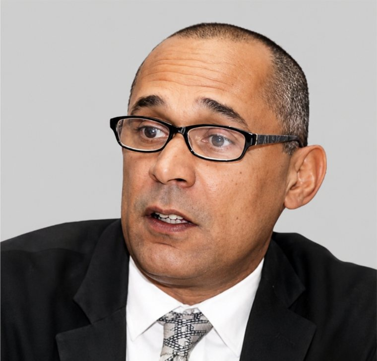
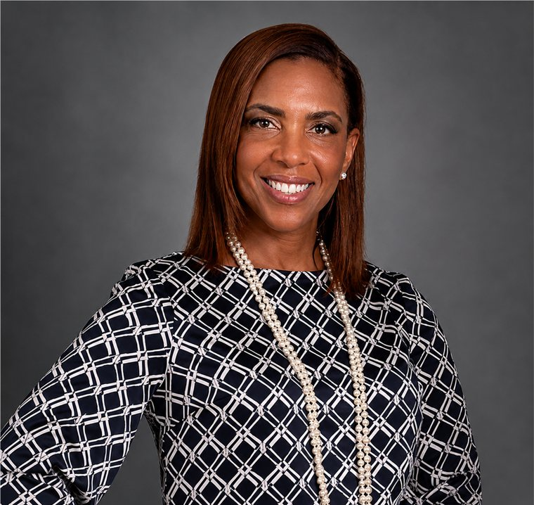
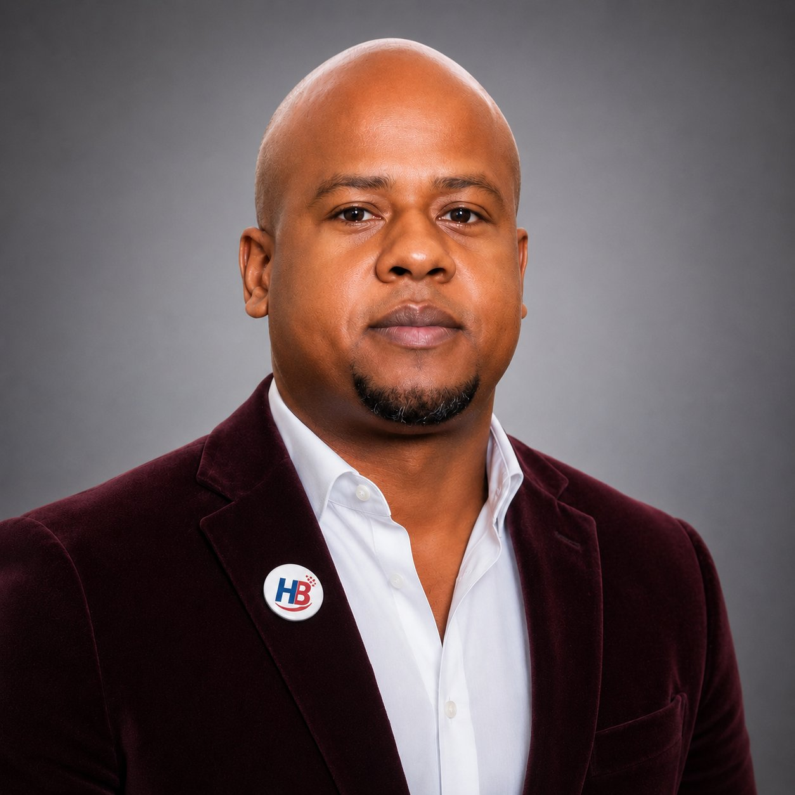
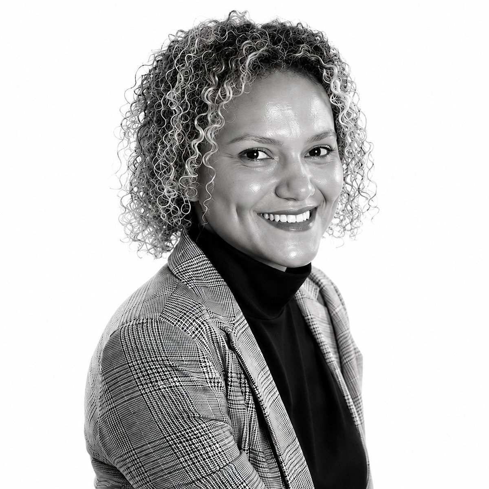

Moun ki dèyè vizyon an — fondatè, estratèj, ak patnè k ap bati Pon Dijital Ayiti rive nan lemond.
Jeffery Boyard se yon antreprenè ayisyen, egzekitif medya, ak inovatè teknoloji ki gen plis pase 20 ane eksperyans nan biznis entènasyonal. Anvan li te fonde HaitiBiznis Technologies, li te bati yon karyè medya ki gen siksè an bay lisans pou fotografi ak kontni eksklizif bay gwo medya tankou TMZ, Page Six, New York Daily News, Access Hollywood, ak Extra. Travay li te enkli figi piblik entènasyonal tankou Denzel Washington, Jennifer Lopez, Tom Cruise, Taylor Swift, ak Oprah — sa ki ba li anpil eksperyans nan branding, devlopman biznis, ak patenarya global.
Jodi a, Jeffery dirije HaitiBiznis Technologies, yon konpayi ki dedye pou bati Pon Dijital Ayiti rive nan lemond. Atravè platfòm prensipal li a, MyPlopPlop, l ap devlope yon ekosistèm dijital entegre ki reyini komès elektwonik, mobilite ki an sekirite, lojistik, lojistik agrikòl, devlopman biznis, ak antreprenarya pou kreye djòb epi elaji opòtinite ekonomik atravè Ayiti, Lafrik, ak Karayib la.
Pasyone pou inovasyon, otonòmi ekonomik fanm, ak devlopman dirab, Jeffery angaje pou sèvi ak teknoloji pou ede antreprenè, ranfòse ekonomi lokal, epi bati patenarya estratejik ki sipòte Objektif Devlopman Dirab Nasyonzini yo (ODD).

Gilbert Hippolyte se yon achitèk, estratèj entènasyonal, ak batisè relasyon ki gen pasyon pou konsevwa koneksyon ki kreye enpak ekonomik dirab. An konbine lespri achitekti li ak devlopman biznis global, li espesyalize nan reyini gouvènman, envestisè, lidè sektè prive, chanm komès, ak òganizasyon devlopman pou transfòme lide an opòtinite dirab.
Kòm Direktè Koneksyon (CCO) nan HaitiBiznis Technologies, Gilbert dirije patenarya estratejik ak inisyativ ekspansyon entènasyonal konpayi an, e li ede pozisyone HaitiBiznis kòm Pon Dijital Ayiti rive nan lemond. Li jwe yon wòl kle nan bati alyans atravè Ayiti, Lafrik, Karayib la, ak pi lwen pou sipòte deplwaman MyPlopPlop, yon ekosistèm dijital entegre ki konekte komès elektwonik, mobilite ki an sekirite, lojistik, lojistik agrikòl, maketing afilyasyon, ak devlopman PME.
Gilbert kwè gwo enfrastrikti pa bati sèlman ak beton ak asye, men tou atravè patenarya solid, vizyon pataje, ak relasyon ki gen konfyans. Kapasite li pou konekte moun, òganizasyon, ak opòtinite ede pouse misyon HaitiBiznis Technologies pou bay antreprenè plis pouvwa, ranfòse kominote, epi akselere devlopman ekonomik dirab.
Gloria Kamira se yon enfimyè anrejistre, antreprenè, ak estratèj sante global ki gen pasyon pou bati patenarya ki kreye enpak sosyal ak ekonomik dirab. Ak anpil eksperyans nan sante, teknoloji, ak devlopman dirab, li te travay ak gouvènman, lidè sektè prive, envestisè, ak òganizasyon san bi likratif pou avanse solisyon inovatè ki amelyore lavi epi ranfòse kominote.
Kòm Direktè Patenarya Lafrik nan HaitiBiznis Technologies, Gloria dirije angajman estratejik òganizasyon an atravè Lafrik, an ankouraje kolaborasyon ak founisè swen sante, òganizasyon fanm, ajans devlopman, ak lidè biznis. Li jwe yon wòl kle nan elaji rezo entènasyonal HaitiBiznis Technologies, an konekte Lafrik ak Karayib la atravè teknoloji, antreprenarya, komès dijital, ak devlopman ekonomik dirab.
Yon defansè solid pou otonòmi ekonomik fanm, Gloria defann inisyativ ki ogmante aksè a antreprenarya, konpetans dijital, sante, ak opòtinite finansye pou fanm ak kominote ki pa gen ase sèvis. Travay li sipòte dirèkteman Objektif Devlopman Dirab Nasyonzini yo, sitou ODD 3 (Bon Sante ak Byennèt), ODD 5 (Egalite Sèks), ODD 8 (Travay Diy ak Kwasans Ekonomik), ak ODD 17 (Patenarya pou Objektif yo).
Konbinezon inik Gloria nan ekspètiz sante, lidèchip estratejik, ak devlopman patenarya global ranfòse misyon HaitiBiznis Technologies pou bati Pon Dijital Ayiti rive nan lemond. Atravè inovasyon kolaboratif ak patenarya enklizif, l ap ede kreye nouvo opòtinite ki pouse kwasans dirab, amelyore aksè a sante, epi bay antreprenè plis pouvwa atravè Lafrik, Karayib la, ak pi lwen.

Marie-Anne Boyard Maignan se yon egzekitif sante akonpli ki gen plis pase 30 ane eksperyans nan lidèchip sante, jesyon operasyon, optimizasyon sik revni, konfòmite, ak planifikasyon estratejik. Pandan tout karyè li, li te dirije ekip miltidisiplinè ak siksè, amelyore operasyon sante, epi mete an plas solisyon inovatè ki amelyore swen pasyan pandan y ap ranfòse pèfòmans òganizasyonèl.
Kòm Estratèj Sante an Chèf nan HaitiBiznis Technologies, Marie-Anne dirije estrateji sante ak inisyativ patenarya konpayi an, an ede konekte teknoloji ak sante atravè Ayiti, Lafrik, ak Karayib la. Li travay pou devlope kolaborasyon ak lopital, founisè swen sante, gouvènman, konpayi asirans, ak òganizasyon devlopman pou elaji aksè a solisyon sante dijital inovatè epi ranfòse sistèm sante kominotè.
Ak ekspètiz ki kouvri newoloji, sèvis transplantasyon, chiriji, kadyoloji, pedyatri, sikoloji, reyabilitasyon, ak medsin entèn, Marie-Anne pote yon pèspektiv inik ki sipòte misyon HaitiBiznis Technologies pou bati Pon Dijital Ayiti rive nan lemond atravè inovasyon, patenarya estratejik, ak solisyon sante dirab.
Wendell Theodore se yon jounalis ayisyen respekte, konsiltan medya, ak estratèj kominikasyon ki gen anpil eksperyans nan jounalis emisyon, afè piblik, ak kominikasyon estratejik. Kòm animatè Le Point sou Radio Métropole, youn nan pwogram nouvèl ki gen plis enfliyans an Ayiti, li te genyen yon repitasyon pou entèvyou pwofon, analiz ekilibre, ak diskisyon ki angaje sou pwoblèm k ap fòme Ayiti ak kominote entènasyonal la.
Kòm Konsiltan Medya an Chèf nan HaitiBiznis Technologies, Wendell bay konsèy estratejik sou relasyon medya, kominikasyon piblik, pozisyònman mak, ak angajman patnè. Li konseye ekip dirijan an sou mesaj efikas, jesyon repitasyon, ak estrateji kominikasyon ki ranfòse vizibilite ak kredibilite konpayi an ak gouvènman, patnè devlopman, envestisè, ak sektè prive.
Ekspètiz li ede HaitiBiznis Technologies kominike misyon li pou bati Pon Dijital Ayiti rive nan lemond, an pwomouvwa inovasyon, antreprenarya, enklizyon dijital, ak patenarya estratejik atravè Ayiti, Lafrik, ak Karayib la.
Atravè konpreyansyon pwofon li sou medya ak angajman piblik, Wendell ede asire vizyon HaitiBiznis Technologies rive jwenn odyans ak moun k ap pran desizyon ki ka transfòme lide an enpak reyèl.

Dukens Emile se yon pwofesyonèl polivalan ki gen plis pase 15 ane eksperyans nan devlopman komèsyal, sèvis kliyan, vant, jesyon operasyon, ak koòdinasyon pwojè. Gras ak pakou li nan sektè distribisyon, otèl, restoran, transpò, ak sèvis, Dukens gen yon ekspètiz solid nan kreye relasyon dirab ak kliyan epi akonpaye antrepriz yo nan kwasans yo.
Nan HaitiBiznis Technologies, li dirije devlopman komèsyal HaitiBiznis Center la, kote li akonpaye antreprenè, komèsan, ak pwofesyonèl nan transfòmasyon dijital yo. Li sipèvize entegrasyon antrepriz yo sou platfòm HaitiBiznis, MyPlopPlop, ak MsouWout, pandan l ap asire pwomosyon solisyon POS, sèvis dijital, ak pwogram akonpayman pou PME yo.
Rekonèt pou lidèchip li, sans òganizasyon li, ak apwòch li ki santre sou rezilta, Dukens kontribye aktivman nan misyon HaitiBiznis: konekte antrepriz yo, kreye opòtinite ekonomik, epi akselere transfòmasyon dijital an Ayiti.
Joseph Lambert se yon antreprenè ak ekspè nan sekirite estratejik, rekonèt pou ekspètiz li nan sekirite, ranseyman, ak relasyon entènasyonal. Ak yon eksperyans solid nan domèn pwoteksyon, jesyon risk, ak entèlijans estratejik, li kontribye nan elaborasyon estrateji pou ranfòse rezilyans òganizasyon yo ak sekirite operasyon yo.
Sètifye nan Relasyon Entènasyonal, li gen konpetans espesyalize nan SP, SB, SC, SR, SA, SH, ansanm ak RH, OPSEC, TRANSEC, SECTA, RG, RT, RI ak RE, sa ki pèmèt li pote yon vizyon global sou anjè sekirite ak estratejik yo.
Anplis pakou pwofesyonèl li, Joseph Lambert se fondatè plizyè gwoup, fondasyon, ak òganizasyon ki gen vokasyon sosyal ak ekonomik. Li se tou Fondatè Chanm Komès Ayisyano-Panameyen ak Entèkarayibeyen (CCHPIC) epi Kojesyonè Federasyon Ayisyen Ti ak Mwayen Antrepriz yo (FHAPME), kote li travay pou ranfòse sektè prive a, devlopman ekonomik, ak pwomosyon patenarya estratejik.
Kòm Direktè Sekirite Estratejik, li mete ekspètiz li nan sèvis gouvènans, jesyon risk, pwoteksyon byen, ak devlopman patenarya estratejik, pou asire yon anviwònman ki an sekirite epi ki pwopis pou kwasans dirab.

Pearl-Marêva Hippolyte se yon egzekitif nan patenarya entènasyonal ak devlopman estratejik ki gen plis pase 18 ane eksperyans nan dirije pwojè ki gen gwo enpak atravè Ewòp, Mwayennoryan, ak Karayib la.
Achitèk pa fòmasyon ak yon ekspètiz avanse nan gouvènans pwojè ak koperasyon entènasyonal, li te dirije epi kòdone pwojè istorik pou enstitisyon piblik, òganizasyon miltinasyonal, ak gwo evènman mondyal, tankou inogirasyon Burj Khalifa, Dubai Opera, World Trade Center Abu Dhabi, ADIPEC, ak anpil inisyativ estratejik gouvènman nan Emira Arab Ini yo.
Kounye a l ap sèvi nan gouvènman lokal an Frans, kote li sipòte devlopman teritoryal, transfòmasyon dijital, ak aplikasyon politik piblik, epi anvan sa li te sèvi kòm Vis-Majistra Bordeaux Métropole, kote li te ede avanse koperasyon entènasyonal ak devlopman lokal dirab.
Kòm Direktè Patenarya Estratejik nan HaitiBiznis Technologies, Pearl dirije angajman òganizasyon an ak gouvènman, òganizasyon entènasyonal, minisipalite, ONG, envestisè, ak patnè sektè prive pou bati alyans estratejik ki akselere antreprenarya, transfòmasyon dijital, ak devlopman ekonomik dirab atravè Ayiti ak Karayib la.
Aprann plis sou HaitiBiznis Technologies ak ekosistèm nou an.